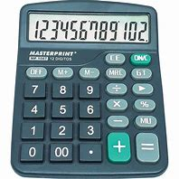
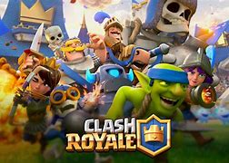

Mis Proyectos
Proyecto: Calculadora de Figuras Geométricas y Detector de Palíndromos
Descripción General
Este proyecto consiste en desarrollar un programa en lenguaje C que:
- Calcula el área y perímetro de figuras geométricas básicas (cuadrado, rectángulo, círculo, triángulo).
- Determina si una cadena de texto es un palíndromo.
Funcionalidades
Calculadora de Figuras Geométricas
- Menú para seleccionar la figura geométrica.
- Ingreso de datos para calcular área y perímetro.
- Visualización de resultados.

Formulario de Veterinaria en JavaScript
Descripción
Este proyecto consiste en desarrollar un formulario web en JavaScript que permita a los dueños de mascotas registrar información sobre sus animales y solicitar servicios veterinarios.
Funcionalidades
- Registro de información de la mascota (nombre, especie, raza, edad, etc.).
- Selección de servicios veterinarios (vacunación, esterilización, consulta, etc.).
- Asignación de fecha y hora para la cita.
- Validación de campos requeridos.
- Envío de información a un correo electrónico o base de datos.
background-size: 100% 100%
Cuestionario de Clash Royale en C++
Descripción
Este proyecto consiste en desarrollar un programa en lenguaje C++ que simula un cuestionario sobre el juego popular Clash Royale. El programa presentará una serie de preguntas relacionadas con el juego y evaluará las respuestas del usuario.
Funcionalidades
- Presentación de preguntas: El programa mostrará una serie de preguntas relacionadas con Clash Royale.
- Evaluación de respuestas: El programa evaluará las respuestas del usuario y asignará puntos según su precisión.
- Clasificación: El programa mostrará la clasificación del usuario al final del cuestionario.
- Opción de repetir: El programa dará la opción de repetir el cuestionario.
